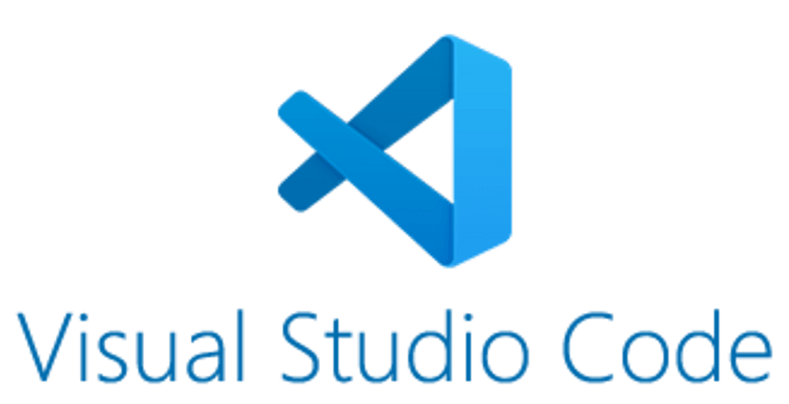

Who am I?
Hello, my name is Braden. I love to program, play games, watch various content, and stay consistently busy with work.
Generally speaking, I tend to overwork and push myself beyond what is healthy, especially when it comes to programming. Once I become involved in a project, I will often work relentlessly until I am completely exhausted.
I also enjoy exploring new ideas through programming. You can see all of my recent projects here. As long as the project is engaging and requires acquiring new knowledge, I strive to take it as far as possible.
I have always been skilled at solving complex problems, even those that are difficult to understand. Although I may lack in creativity, which is why I prefer working on projects for others, I excel in maintaining an intense and relentless work ethic when it comes to programming.
What do I use to program?
My process can be somewhat chaotic, but I can list the websites and software I use most frequently in my daily workflow:

My YouTube channel
As much as I love programming, I also enjoy creating videos. Although I do not upload frequently due to a busy schedule, when I do, I strive to produce something truly remarkable.